Multivariate random number generation demo
This demo illustrates how the class "RandGen" can be used to generate multivariate random numbers. The marginals of the different RVs can be any distributions known to CUPID, and the marginal distributions can all be different.
In the first several examples, RandGen functions are used directly in a non-object-oriented (OO) fashion. The last examples show how to use RandGen in an OO fashion.
IMPORTANT: RandGen uses some routines from ExtractNameVal at https://github.com/milleratotago/ExtractNameVal so you need to have that in addition to Cupid.
Contents
A simple non-OO example
NCases = 25; % Number of random cases to be generated.
Specify the number of random variables (RVs) and their marginal distributions.
NRVs = 3;
RVs = cell(NRVs,1);
RVs{1} = Normal(0,1); % Each RV can be any legal Cupid distribution.
RVs{2} = Exponential(.01);
RVs{3} = Triangular(20,50);
Specify the upper triangular of a matrix determining the correlations among the RVs.
RhoControllers = ... [ 1 0.4 0.2; ... 0 1 0.6; ... 0 0 1 ]; RhoControllers = RhoControllers + triu(RhoControllers,1)'; % Copy the upper triangular portion into the lower triangular.
IMPORTANT NOTE: The numbers in this RhoController matrix are not the actual correlations among the RVs. They are only monotonically related to those correlations. There is more information about this in a later example describing how to adjust the RhoControllers to get a desired true correlation matrix.
randoms = RandGen.GenRands(RVs,RhoControllers,NCases)
randoms =
-0.28561 18.476 35.437
0.13116 69.813 40.03
-0.37353 14.645 28.975
0.77297 116.9 34.137
-1.0784 6.9469 25.543
0.21603 40.144 33.036
-0.93824 32.187 28.725
0.17117 99.25 29.259
-0.4383 53.554 35.339
-0.61158 24.555 40.476
1.7412 217.82 38.493
0.27992 32.111 35.312
0.8435 199.8 46.968
-0.2604 9.1523 26.602
-0.41277 58.544 28.13
-0.9547 1.5326 28.992
-0.85605 76.135 34.957
0.075247 197.45 35.306
-0.027699 28.996 35.679
-0.43733 0.17938 25.999
1.0169 154.61 37.462
-0.79015 41.422 33.216
-0.096663 217.79 43.088
-0.004617 84.924 40.841
1.3102 75.516 34.505
Note that NCases is a vector, which is somewhat different than the usual convention when generating random numbers. For example,
u = rand(10);
produces a 10x10 matrix of random numbers.
Relation of correlations to RhoController values (non-OO).
Continuing on the simple example, this section shows that the true correlations among these RVs do NOT match the numbers in RhoControllers. For the example, this is done by generating a large number of cases so that the true correlations can be estimated very accurately. That is, the number of cases is large enough that the mismatches between computed correlations and RhoController values are not just due to random error.
NCases = 5000; randoms = RandGen.GenRands(RVs,RhoControllers,NCases); obscorrs = corr(randoms)
obscorrs =
1 0.36919 0.18975
0.36919 1 0.53191
0.18975 0.53191 1
Note that the observed correlations do not match the values in RhoControllers.
Adjusting RhoController values to get desired correlations (non-OO).
So how do you get the specific target correlations that you want? For convenience, GenRands can be told to adjust the RhoControllers automatically to give you the target correlations that you want. This allows you to skip the FindRhoControllerMatrix step from the previous section.
TargetCorrs = ... [ 1 0.5 0.3; ... 0 1 0.5; ... 0 0 1 ]
TargetCorrs =
1 0.5 0.3
0 1 0.5
0 0 1
The optional argument 'Adjust' tells GenRands to find the required RhoControllers itself. With that argument, you can also specify a value for NStepsApprox (the default is 200).
NCases = 250000; % Generate a lot of random numbers to get good estimates of the correlations. randoms = RandGen.GenRands(RVs,TargetCorrs,NCases,'Adjust','NSteps',500); corr(randoms) % Check that the correlations are in fact quite close to our targets.
ans =
1 0.49978 0.29865
0.49978 1 0.49916
0.29865 0.49916 1
An example with discrete random variables (non-OO)
Nothing is really different except that the random variables are discrete.
NRVs = 2;
RVs = cell(NRVs,1);
RVs{1}=Poisson(23); % The Poisson parameter is the mean
RVs{2}=Poisson(12);
TargetCorrs = [1 0.3; 0.3 1]; % Replace 0.3 with whatever correlation you want.
NCases = 10000;
r = RandGen.GenRands(RVs,TargetCorrs,NCases,'Adjust','NSteps',500);
corr(r)
figure; histogram(r(:,1));
ans =
1 0.30287
0.30287 1
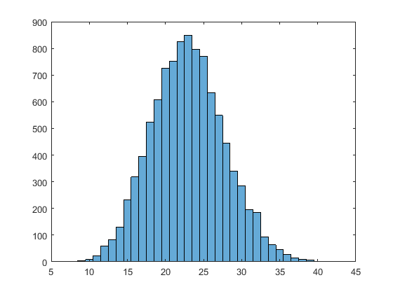 Example of object-oriented use
Define the random variables pretty much as before.
NRVs = 3;
RVs = cell(NRVs,1);
RVs{1} = RNGamma(4,.05); % Each RV can be any legal Cupid distribution.
RVs{2} = Exponential(.01);
RVs{3} = Triangular(20,50);
TargetCorrs = ...
[ 1 -0.2 0.8; ...
0 1 -0.4; ...
0 0 1 ]
TargetCorrs =
1 -0.2 0.8
0 1 -0.4
0 0 1
Now create a new random number generator object. It needs the same information as before to specify the multivariate distribution.
mymultivar = RandGen(RVs,TargetCorrs,'Adjust','NSteps',500,'Histograms','Scattergrams'); disp('Here are the values of RhoControllers, in case you want to save them for later re-use:'); temp1 = mymultivar.RhoControllers disp('FYI, here are the maximum & minimal attainable correlations with these RVs:'); tempMax = mymultivar.RhoMax tempMin = mymultivar.RhoMin
Here are the values of RhoControllers, in case you want to save them for later re-use:
temp1 =
1 -0.23248 0.82515
-0.23248 1 -0.44444
0.82515 -0.44444 1
FYI, here are the maximum & minimal attainable correlations with these RVs:
tempMax =
0 0.97757 0.96906
0 0 0.89582
0 0 0
tempMin =
0 -0.7875 -0.96906
0 0 -0.89582
0 0 0
Now call the object's function to generate some random numbers from this distribution. By default, this function will also produce a histogram for each variable and a scatterplot for each pair of variables.
r=mymultivar.Rands(10000);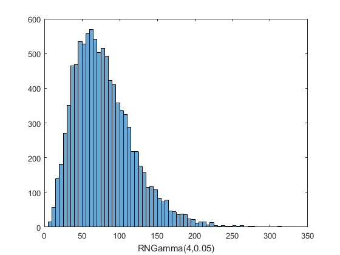 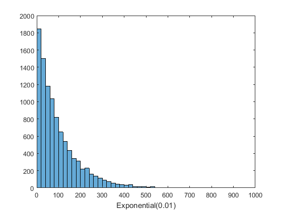 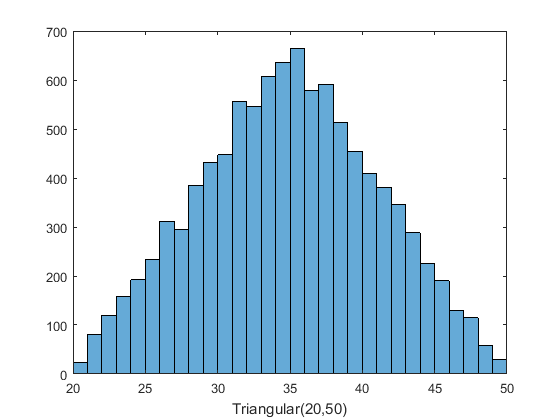 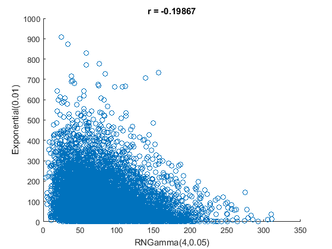 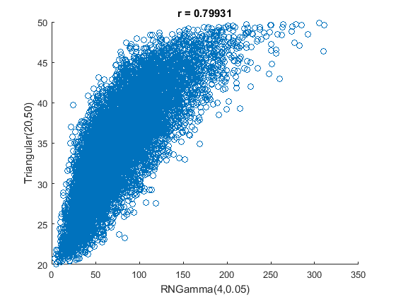 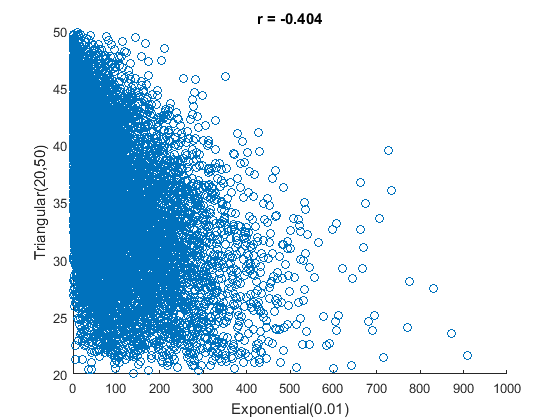
Here is how you would turn off automatic plotting of the two figures.
mymultivar.WantHistograms = false;
mymultivar.WantScattergrams = false;
r2=mymultivar.Rands(10000); % No figures are plotted.
When would you want to use the OO approach? Its main advantage is that it is faster if you generate many sets of random numbers from the same multivariate distribution. This is because the object "remembers" the adjusted RhoControllers values so that you can get repeated samples from the same multivariate distribution without going through the (slow) RhoController adjustment step each time. Here is an example:
NSamples = 3; NCases = 10; for iSample = 1:NSamples ThisSample = mymultivar.Rands(NCases) % Some processing of ThisSample end
ThisSample =
38.553 25.175 29.746
69.899 73.752 34.621
166.38 64.153 41.835
78.671 247 38.866
56.851 91.422 32.862
96.38 4.4011 42.733
64.569 323.84 33.342
86.457 48.361 37.091
52.266 71.049 32.462
154.9 10.515 43.236
ThisSample =
53.158 61.693 39.057
53.608 3.6771 36.407
50.438 93.594 25.378
42.185 19.307 32.382
77.262 201.14 34.288
159.64 63.726 40.8
95.502 38.426 35.384
99.551 174.4 31.344
37.333 225.91 28.048
60.562 18.624 34.889
ThisSample =
76.746 162.32 36.611
71.799 71.553 35.144
93.342 42.625 35.29
79.596 7.4497 40.322
55.808 26.111 36.183
45.45 135.38 25.989
92.778 330.03 38.065
33.625 87.599 29.358
148.96 48.918 44.945
108.39 72.374 39.823
An OO example with discrete RVs
NRVs = 3;
RVs = cell(NRVs,1);
RVs{1} = Poisson(4); % Each RV can be any legal Cupid distribution.
RVs{2} = UniformInt(1,10);
RVs{3} = Binomial(20,.5);
TargetCorrs = ...
[ 1 -0.2 0.8; ...
0 1 -0.4; ...
0 0 1 ]
mymultivar = RandGen(RVs,TargetCorrs,'Adjust','NSteps',500,'Histograms','Scattergrams');
TargetCorrs =
1 -0.2 0.8
0 1 -0.4
0 0 1
Here are the values of RhoControllers, in case you want to save them for later re-use. mymultivar holds onto them, but you might want to save them in a file to speed up later runs.
temp1 = mymultivar.RhoControllers
disp('FYI, here are the maximum & minimal attainable correlations with these RVs:');
tempMax = mymultivar.RhoMax
tempMin = mymultivar.RhoMin
r=mymultivar.Rands(10000);
mymultivar.WantHistograms = false;
mymultivar.WantScattergrams = false;
temp1 =
1 -0.21075 0.82146
-0.21075 1 -0.41673
0.82146 -0.41673 1
FYI, here are the maximum & minimal attainable correlations with these RVs:
tempMax =
0 0.95409 0.97559
0 0 0.95952
0 0 0
tempMin =
0 -0.95409 -0.97559
0 0 -0.95952
0 0 0
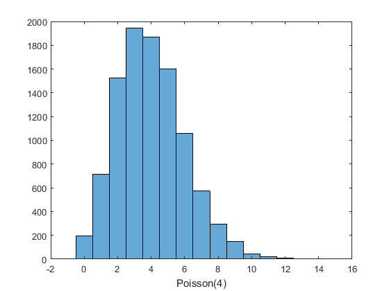 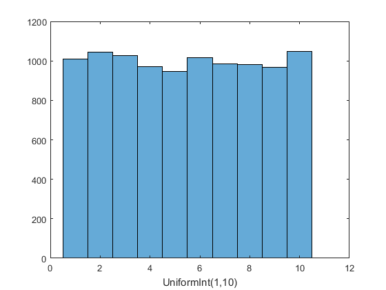 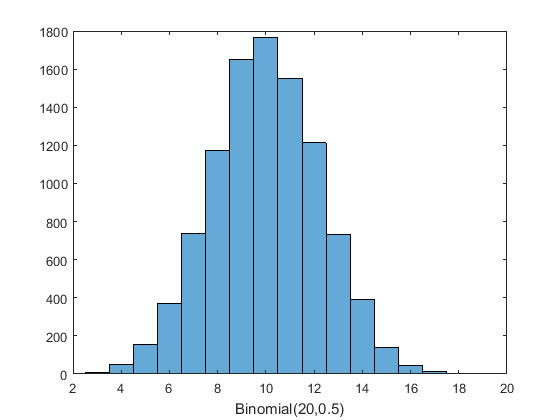 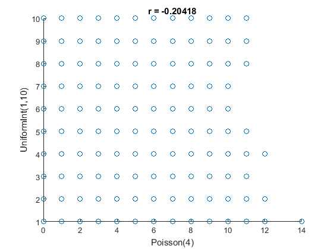 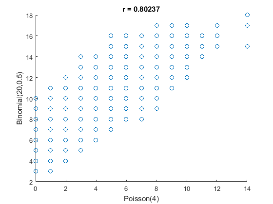 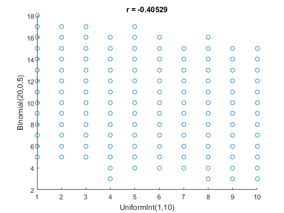 Now verify that the random numbers from this distribution have the desired correlations.
NCases = 250000; ThisSample = mymultivar.Rands(NCases); corr(ThisSample) for iRV = 1:NRVs figure; histogram(ThisSample(:,iRV)); end
ans =
1 -0.19919 0.79999
-0.19919 1 -0.39903
0.79999 -0.39903 1
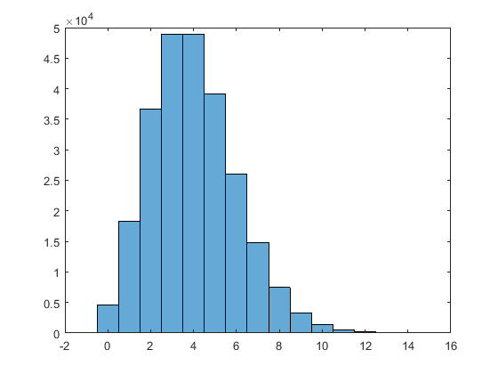 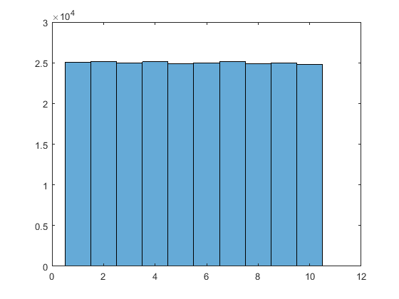 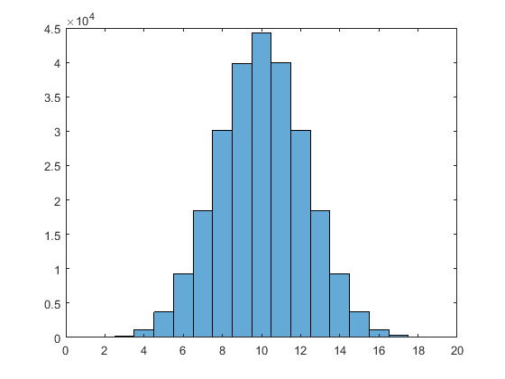